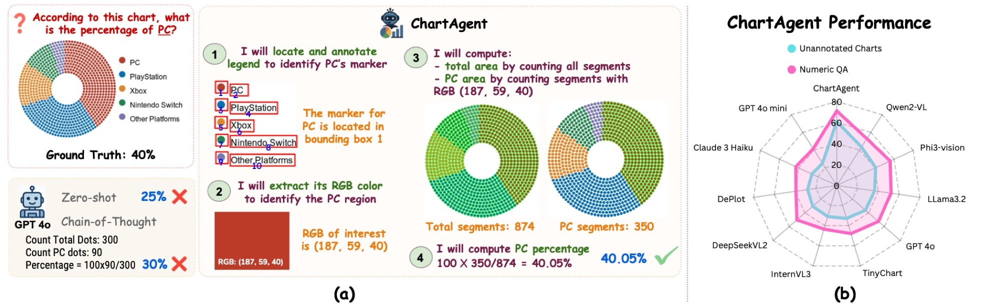
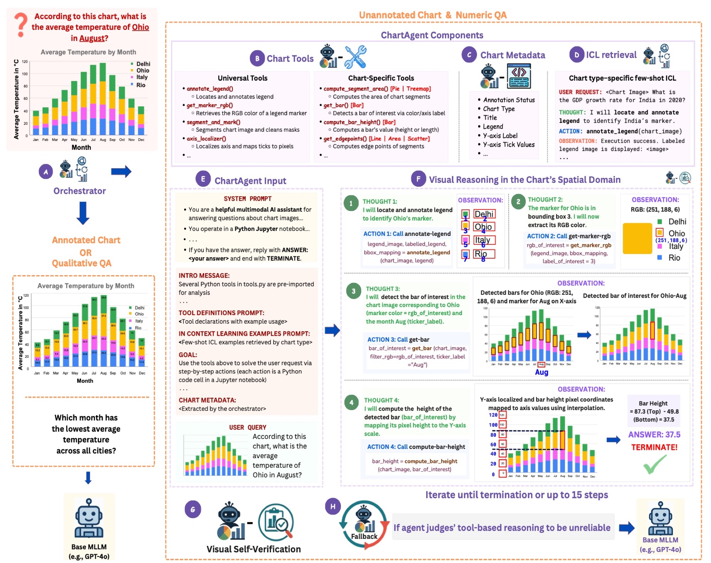
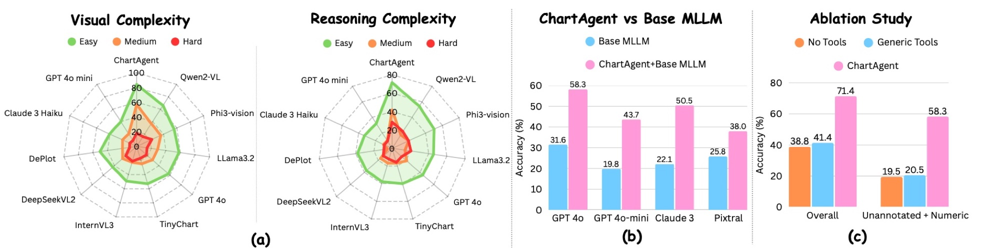

Abstract
Recent multimodal LLMs have shown promise in chart-based visual question answering, but their performance declines sharply on unannotated charts—those requiring precise visual interpretation rather than relying on textual shortcuts. To address this, we introduce ChartAgent, a novel agentic framework that explicitly performs visual reasoning directly within the chart’s spatial domain. Unlike textual chain-of-thought reasoning, ChartAgent iteratively decomposes queries into visual subtasks and actively manipulates and interacts with chart images through specialized actions such as drawing annotations, cropping regions (e.g., segmenting pie slices, isolating bars), and localizing axes, using a library of chart-specific vision tools to fulfill each subtask. This iterative reasoning process closely mirrors human cognitive strategies for chart comprehension. ChartAgent achieves state-of-the-art accuracy on the ChartBench and ChartX benchmarks, surpassing prior methods by up to 16.07% absolute gain overall and 17.31% on unannotated, numerically intensive queries. Furthermore, our analyses show that ChartAgent is (a) effective across diverse chart types, (b) achieves the highest scores across varying visual and reasoning complexity levels, and (c) serves as a plug-and-play framework that boosts performance across diverse underlying LLMs. Our work is among the first to demonstrate visually grounded reasoning for chart understanding using tool-augmented multimodal agents.
Core contributions
- 1A multimodal agent for chartsAmong the first to show visually grounded chart reasoning with a tool-augmented agent.
- 2Chart-specific vision toolsA library covering 40+ chart types: legends, bars, pie and treemap segments, axes, edge points.
- 3Visual self-verificationEvery tool returns a picture the agent inspects, so it can retry with other settings or tools.
- 4New state of the art71.4% on ChartBench, 16 points above the next best of over 30 baselines.
- 5Plug-and-playLifts GPT-4o, GPT-4o-mini, Claude 3 and Pixtral alike on hard chart questions.
- 6Honest analysisResults by chart type and difficulty, ablations, and a study of how it fails.
Method
1Why charts are hard
Multimodal LLMs do well when a chart prints its values as text, but struggle on unannotated charts, where the answer must be read from bar heights, slice areas or line positions. People handle these by annotating the chart: tracing lines across to an axis, circling a slice, or matching colours to a legend. ChartAgent does the same.

2Reasoning inside the chart
ChartAgent runs a ReAct-style loop of up to 15 steps. In each step it decides the next visual subtask (for example, “find Ohio in the legend”), calls a tool that acts directly on the chart image, and looks at the result before deciding what to do next.
3Chart tools
The tool library has universal tools (annotate the legend, get a marker’s colour, segment the chart, localize axes and map ticks to pixels) and chart-specific tools (compute segment areas for pies and treemaps, detect a bar and compute its height, find edge points on line, area and scatter plots). Tools return both numbers and annotated images, so the agent can see whether a step worked.
4Routing and fallback
An orchestrator first extracts chart metadata (type, title, legend, axes, whether values are printed). Annotated charts and qualitative questions go straight to the base MLLM, saving time; unannotated, numeric questions go to the agent, which also retrieves examples for that chart type. Built on AutoGen with GPT-4o.
Results
- Best on ChartBench: 71.4% overall (+16.1 points) and 60.8% on unannotated charts (+17.3 points).
- Best on ChartX: 59.7% overall, with the top scores on unannotated charts and numeric questions.
- Beats newer models too: on a freshly curated set, 10.5 points above the next best, GPT-5.
| Accuracy (%) | ChartBenchoverall | ChartBenchunannotated | ChartXoverall | ChartXunannotated |
|---|---|---|---|---|
| GPT-4o | 54.5 | 36.2 | 56.9 | 39.4 |
| Qwen2-VL | 54.5 | 43.5 | 55.7 | 43.0 |
| Phi-3 Vision | 55.3 | 40.8 | 48.7 | 41.7 |
| ChartAgent (ours) | 71.4 | 60.8 | 59.7 | 44.2 |
Selected from Table 1 of the paper, which compares more than 30 proprietary, open-weight and chart-specific models.
Analysis
- Best at every difficulty: highest accuracy at easy, medium and hard levels of both visual and reasoning complexity.
- Works with any base model: on unannotated numeric questions, GPT-4o rises from 31.6% to 58.3%, Claude 3 from 22.1% to 50.5%.
- Chart tools are the key: without tools, or with only generic image tools, overall accuracy drops from 71.4% to about 40%.
- Self-checking works: when a tool output was wrong, the agent noticed and recovered about 70% of the time in a manual review.

BibTeX
@inproceedings{kaur2026chartagent,
title = {ChartAgent: A Multimodal Agent for Visually Grounded
Reasoning in Complex Chart Question Answering},
author = {Kaur, Rachneet and Srishankar, Nishan and Zeng, Zhen and
Ganesh, Sumitra},
booktitle = {Proceedings of the 64th Annual Meeting of the Association
for Computational Linguistics (Volume 1: Long Papers)},
pages = {18488--18555},
year = {2026},
publisher = {Association for Computational Linguistics},
url = {https://aclanthology.org/2026.acl-long.843}
}